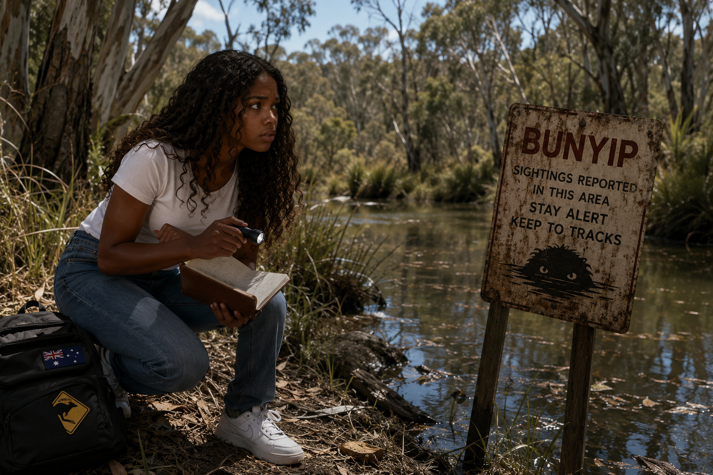

| Brooklyn followed her uncle through the thick Aussie bush,
the late sun glowing orange through the gum trees. The air smelled of eucalyptus and warm dust,
and every step made the dry leaves crackle under their boots.
Her uncle moved steadily, scanning the ground like he was reading a secret
language written in the dirt.
“We’re close to the billabong,” he said quietly.
“If the Bunyip is anywhere, it’ll be there.”
The bush grew strangely quiet as they walked —
no birds, no insects, just the soft rustle of wind through the branches.
Brooklyn felt a shiver of excitement and nerves twist in her stomach.
They reached the edge of the billabong.
The water was dark and still, reflecting the sky like a sheet of black glass.
Reeds swayed gently at the edges, and the mud near the bank was stamped with huge, round prints.
Her uncle crouched. “These aren’t roo tracks,” he muttered. “Something heavier came through.”
Brooklyn leaned closer. The prints were deep, wide, and fresh
|

|
 Restart
Restart
 Finish
Finish